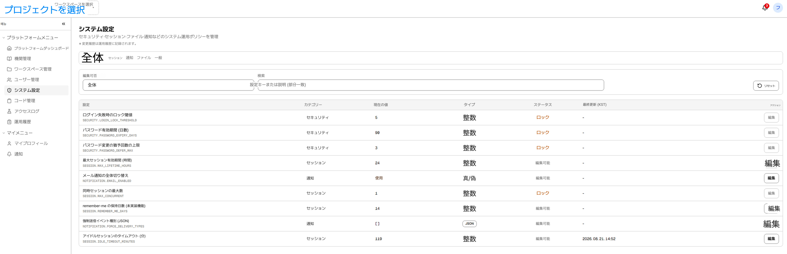
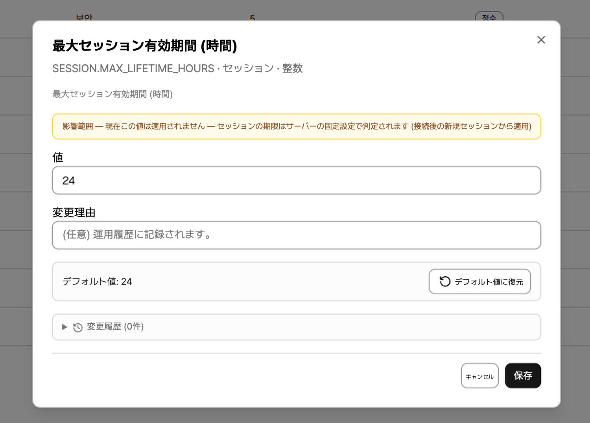
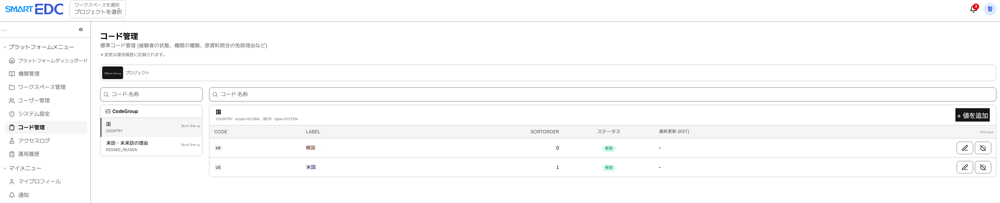
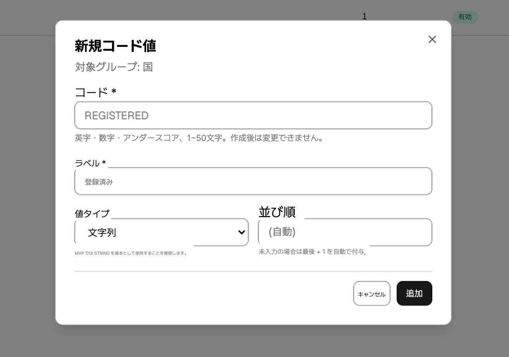
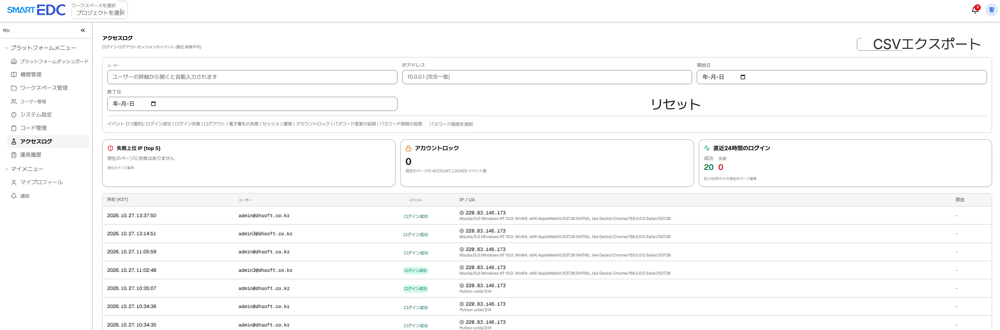
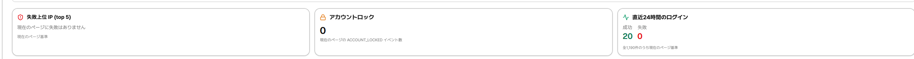
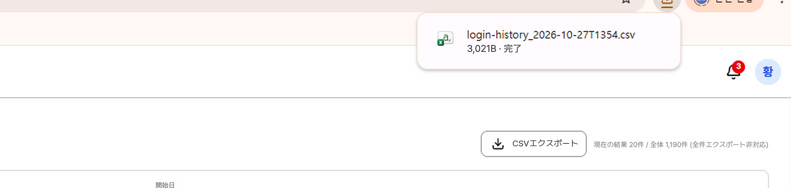
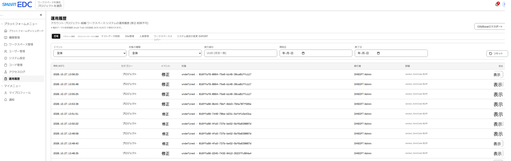
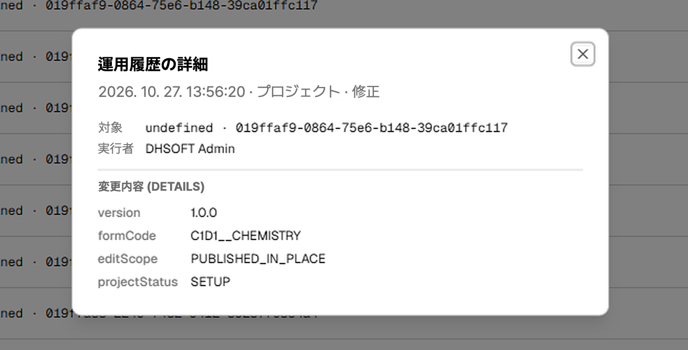

プラットフォーム管理
SCR-PLT-004·005·006·007 · システム設定 · コード管理 · アクセスログ · 運用履歴
システム設定
- 1.1画面構成
- 1.2設定値の編集
1.1画面構成
概要
プラットフォーム全体に適用される運用ポリシーを一つの表にまとめて表示する画面です。値を直接変更する場所ではなく、どのポリシーがどの値に設定されているかを確認する場所です。変更できる項目だけ編集ウィンドウが開きます。
画面説明

カテゴリータブ — 全体 · セキュリティ · セッション · 通知 · ファイル · 一般です。ワークスペース管理者には セッション · 通知 の2種類のみ表示されます。
編集可否 — ロックされた項目を除外し、変更できる項目だけを表示するときに使います。
検索 — 設定キーまたは説明の一部で探します。
リセット — 設定した条件をすべて削除します。
編集 — その項目の値を変更するウィンドウを開きます 1.2。ロック項目はボタンが薄く表示され、選択できません。
左のメニューのプラットフォームメニュー > システム設定が、この画面への唯一の入口です。
ヘッダーの「※ 変更履歴は運用履歴に記録されます。」— 誰がいつ何を変更したかは、運用履歴で確認します 4.1。
タイプ — 整数 · 真/偽 · JSON など、値の形式です。編集ウィンドウの入力方法は、このタイプによって変わります。
ステータス — 編集可能と🔒ロックの2種類です。ロックはシステムが固定した項目のため、管理者も変更できません。
最終更新 (KST) — 一度も変更していない場合は - です。
項目名の下にある英字が設定キーです。検索や運用履歴の照会では、このキーを使います。
注意事項
必須確認 データ破損 · フォーム完了不可
- • ここで変更した値は現在のシステム動作には反映されません。値と変更履歴は保存されますが、実際の判定（ログインロックのしきい値・セッション期限など）は別の設定で行われます。編集ウィンドウの影響範囲の案内に、項目ごとにその事実が表示されるので、必ずご確認ください 1.2。
1.2設定値の編集
概要
表の編集を選択すると開くウィンドウです。値を1つだけ変更する単純なウィンドウですが、一番上の影響範囲の案内で、その値が実際に使われるかどうかが分かるため、変更する前に必ず読んでください。
画面説明

値 — タイプに合った形式で入力します。整数の項目は推奨範囲を外れると、保存前に案内が表示されます。
変更理由 — 任意の項目です。入力すると運用履歴に一緒に記録されるため、なぜ変更したのかを残しておくことをおすすめします。
デフォルト値に復元 — デフォルト値を入力欄に入れるだけです。この選択だけでは保存されないため、続けて保存を選択する必要があります。
保存 — 値を反映します。隣のキャンセルを選択すると、変更を破棄してウィンドウを閉じます。
ウィンドウのヘッダーに設定キー · カテゴリー · タイプが一緒に表示されます。別の項目を開いていないか、ここで確認してください。
黄色の影響範囲の案内 — その値が実際の動作に反映されるかどうかを示します。下の注意事項を確認してください。
変更履歴 — この項目だけの変更記録です。件数が0件であれば、一度も変更していないことを意味します。
キャンセル — 変更を破棄します。
ウィンドウの外を選択しても、閉じるを選択しても同じです。
注意事項
必須確認 データ破損 · フォーム完了不可
- • 現在、すべての項目が「適用されません」と案内されます。値と変更履歴は保存されますが、ログインロックやセッション期限などの実際の判定は別の設定で行われるためです。ポリシーを実際に変えなければならない場合は、この画面だけでは不十分なので、システム担当者に依頼してください。
コード管理
- 2.1画面構成
- 2.2コード値の追加
2.1画面構成
概要
画面の各所のドロップダウンやバッジに使われる標準コードを管理する画面です。左でコードグループを選ぶと、右にそのグループの値一覧が表示される2段構成です。被験者ステータス、機関タイプ、来院・未来院の理由などは、すべてここから取得されます。
画面説明

プラットフォーム / プロジェクトタブ — プラットフォームは全プロジェクト共通のコード、プロジェクトはそのプロジェクトだけのコードです。プロジェクトタブは、プロジェクトに入った状態でのみ開きます。
+ 値を追加 — 選択したグループにコード値を追加します 2.2。
行のアクション — 左の鉛筆は編集（ラベル·並び順）、右は有効/無効の切り替えです。有効から無効に切り替えるときは、確認ウィンドウがもう一度表示されます。
コードグループを選択すると、右の値一覧がそのグループのものに切り替わります。
左のメニューのプラットフォームメニュー > コード管理が、この画面への唯一の入口です。
「※ 変更は運用履歴に記録されます。」— コードの変更も運用履歴に残ります 4.1。
グループのヘッダーにグループコード · 範囲 · 値の数 · 種類が表示されます。種類がSYSTEMのグループは、システムが初期データとして投入した標準コードです。
列の構成 — CODE · LABEL · SORTORDER · ステータス · 最終更新 (KST) · アクションです。画面に表示される文字は CODE ではなく LABEL です。
ステータス — 無効に変更した値は新たに選択できなくなりますが、すでにその値で保存された資料はそのまま残ります。
検索は左（グループ）と右（値）にそれぞれあります。
注意事項
誤解しやすい動作
- • プラットフォーム範囲のコードはシステム管理者のみ編集できます。ワークスペース管理者とデータ管理者は、プロジェクトタブのコードだけを編集でき、そのタブはプロジェクトに入った状態でのみ開けます。
2.2コード値の追加
概要
選択したグループにコード値を1つ追加します。コードはシステムが保存する値で、ラベルは画面に表示される文字です。両者を混同すると、画面は正しく見えても保存される値が変わってしまうため、注意してください。
画面説明

コード * — システムに保存される値です。英字·数字·アンダースコアの1〜50文字で、作成後は変更できません。
ラベル * — 画面に表示される文字です。こちらは後から修正できます。
値タイプ — 文字列が基本で、ほとんどの場合はそのままで問題ありません。
並び順 — 一覧での順番です。空欄のままにすると自動で振られます。
追加 — 値を作成します。隣のキャンセルを選択すると、入力内容は破棄されます。
ウィンドウのヘッダーに対象グループが表示されます。別のグループに値を入れていないか、ここで確認してください。
コード欄の下に、使用できる文字と長さ、そして変更不可であることが併せて案内されます。
値タイプの案内 — 文字列の使用をおすすめします。
並び順の案内 — 空欄のままにすると、最後の値 + 1 が自動で付与されます。
キャンセル — ウィンドウを閉じ、何も作成しません。
注意事項
必須確認 データ破損 · フォーム完了不可
- • コードは作成後、一切変更できません。そのコードで保存された資料ができてしまうと値を元に戻す方法がないため、研究の標準や報告様式で使うコード体系を先に確認してから入力してください。誤って作った値は削除ではなく無効として処理してください。
アクセスログ
- 3.1画面構成
- 3.2検索 · フィルターと集計
- 3.3CSVエクスポート
3.1画面構成
概要
誰がいつ、どこから接続したかを記録した画面です。記録は追加のみで、修正・削除はできません。そのため、アカウントの不正利用や異常な接続を確認するための一次資料になります。システム管理者は全体を、ワークスペース管理者は自分のワークスペースの範囲を閲覧できます。
画面説明

CSVエクスポート — 今見ている結果をファイルとして保存します 3.3。
ユーザー · IPアドレス · 開始日 · 終了日 — 照会の範囲を絞り込みます 3.2。
イベント — ログイン成功・失敗、ログアウト、電子署名の失敗など9種類のうち1つを選択します 3.2。
リセット — 設定した条件をすべて削除します。
左のメニューのプラットフォームメニュー > アクセスログが常時の入口です。ユーザー管理のユーザー詳細からも、そのユーザーで絞り込まれた状態で入ることができます。
ボタンの横に現在の結果 N件 / 全体 N件が表示されます。下の注意事項を確認してください。
集計カード3枚 — 失敗の多いIP上位 · アカウントロック · 直近24時間のログインです 3.2。
列の構成 — 時刻 (KST) · ユーザー · イベント · IP / UA · 理由です。IPの下の小さな文字が、接続に使われたプログラム (UA) です。
イベントのバッジ — 失敗系のものは赤く表示されるため、一目で区別できます。
副題の「（修正・削除不可）」— 記録を消したり修正したりできないという意味です。
注意事項
誤解しやすい動作
- • ページ番号ではなく 前へ / 次へ でのみ移動します。記録が次々と蓄積される資料のため、ページの境界がずれると照会中の行が重複したり抜け落ちたりすることがあります。そのため、システムは番号による移動を提供していません。
3.2検索 · フィルターと集計
概要
照会条件は5つあり、互いに重ねて適用されます。その下の集計カード3枚は照会結果を要約しますが、現在のページに読み込んだ20件だけを数えている点を必ず念頭に置く必要があります。
画面説明


ユーザー — アカウントで絞り込みます。
IPアドレス — 全体が一致する必要があります。一部だけを入力すると、絞り込まれません。
開始日 — 照会の開始日です。
終了日 — 照会の終了日です。開始日と合わせて期間を指定します。
リセット — 5つの条件をすべて削除します。
イベント — 一度に1つだけ選択されます。選択中のチップをもう一度選択すると解除されます。
ユーザー欄の案内 — ユーザー管理のユーザー詳細から入ると、そのアカウントが自動で入力されます。
IP欄の案内 — 入力例の形式が表示されます。
失敗上位 IP (top 5) — ログインに失敗が集中しているIPです。同じIPで失敗が繰り返される場合は、アカウントの不正利用の試みを疑うことができます。
アカウントロック — ロックイベントの件数です。
直近24時間のログイン — 成功と失敗の件数です。
3つのカードには、いずれも下に現在のページ基準と記されています。下の注意事項を確認してください。
注意事項
必須確認 データ破損 · フォーム完了不可
- • 集計カード3枚は全体ではなく、現在のページの20件だけを数えます。「失敗上位 IP なし」や「アカウントロック 0」は、このページにないという意味であり、全期間にないという意味ではありません。全体を確認するには、イベントのフィルターをログイン失敗またはアカウントロックに設定して、もう一度照会してください。
3.3CSVエクスポート
概要
照会結果をカンマ区切りのファイル (CSV) としてダウンロードします。別途の要求や待ち時間なしで、画面からすぐに作成され、ファイル名にダウンロードした時刻が入ります。
画面説明


CSVエクスポート — 選択すると、確認ウィンドウなしですぐにファイルがダウンロードされます。
ボタンの横の現在の結果 N件 / 全体 N件 (全件 export 非対応) — 下の注意事項を確認してください。
ダウンロードの通知に、ファイル名とサイズが表示されます。ファイル名はlogin-history_年月日T時分.csvの形式です。
列7種 — 時刻(KST) · 氏名 · メール · イベント · IPアドレス · 接続プログラム(UA) · 失敗理由です。内部の識別コードは含まれません。
1行が接続イベント1件です。画面の表と同じ順序で並びます。
注意事項
必須確認 データ破損 · フォーム完了不可
- • ダウンロードされるのは現在のページの結果だけです。ボタン横の「全件 export 非対応」がその意味で、全期間を取得するには期間やイベントの条件を絞り、複数回に分けてダウンロードする必要があります。ファイルにはアカウントのメールアドレスと接続IPがそのまま含まれるため、個人情報を含むファイルとして保管・共有してください。
運用履歴
- 4.1画面構成
- 4.2詳細表示
4.1画面構成
概要
アカウント·プロジェクト·参加機関·ワークスペース·システム設定について、誰が何を変更したかを記録した画面です。アクセスログが「出入りの記録」なら、こちらは「変更の記録」です。同じく追加のみで、修正・削除はできません。
画面説明

カテゴリータブ — アカウント管理 · プロジェクトステータス遷移 · テストデータ削除 · Site管理 · 人員管理 · ワークスペースメンバー · システム設定変更 · EXPORT に分けて確認します。
イベント — 作成·修正·削除など、行為の種類で絞り込みます。
対象の種類 — アカウント·プロジェクト·機関など、何を変更したかで絞り込みます。
実行者ID — 特定のユーザーの行為だけを表示します。識別子の全体が一致する必要があります。
CSV/Excelエクスポート — 照会結果のファイル作成を要求します。
表示 — その行の詳細ウィンドウを開きます 4.2。何がどのように変わったかは、このウィンドウでのみ確認できます。
左のメニューのプラットフォームメニュー > 運用履歴が常時の入口です。
「※ 臨床データの変更履歴(Audit Trail)は別の画面で提供されます。」— 被験者データを修正した記録は、こちらではなく Audit Trail にあります。
対象列 — 現在は先頭部分がundefinedと表示されます。下の注意事項を確認してください。
詳細列 — 変更された項目名が要約として表示されます。値まで見るには表示を選択します。
開始日 · 終了日 — 期間を指定します。
注意事項
必須確認 データ破損 · フォーム完了不可
- • 「対象」列の先頭の undefined は表示の不具合です。システムがまだ名前を把握していない種類の対象のため、そのように表示されるもので、記録そのものが誤っているわけではありません。何を変更した記録なのかは、カテゴリー列、後ろに付いた識別子、そして「表示」の変更内容で判断してください。
4.2詳細表示
概要
一覧の表示で開くウィンドウです。一覧がいつ · 誰が · 何をまで示すのに対し、このウィンドウはそこにどのように変わったかを加えます。照会専用で、ここで修正できるものはありません。
画面説明

閉じる — ウィンドウを閉じて一覧に戻ります。ウィンドウの外を選択しても同じです。
ウィンドウのヘッダーに時刻 · カテゴリー · イベントが1行で表示されます。
対象 — 一覧の対象列と同じ値です。先頭のundefinedは表示の不具合なので、後ろの識別子を使ってください（4.1 の注意事項を参照）。
実行者 — 操作を行ったユーザーです。メールが一緒に記録されている場合は、下に追記されます。
変更内容 (DETAILS) — このウィンドウの核心です。変わった項目が、名前と値の組として並びます。
項目名が英語なのは、システムの内部名をそのまま表示するためです。キャプチャは CRF フォームの修正記録のため、バージョン·フォームコード·編集範囲·プロジェクトステータスが一緒に残っています。
注意事項
誤解しやすい動作
- • 運用履歴には運用・管理の行為のみが含まれます。被験者データを修正した記録は別の Audit Trail 画面にあるため、規制対応の資料を準備するときは、両方の画面を一緒に確認する必要があります。